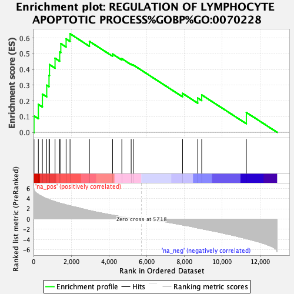
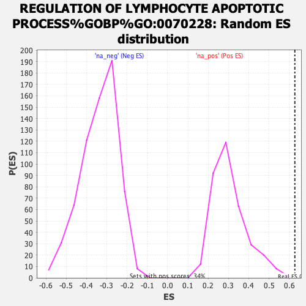

| | | Dataset | ranked_genes_2 |
| Phenotype | NoPhenotypeAvailable |
| Upregulated in class | na_pos |
| GeneSet | REGULATION OF LYMPHOCYTE APOPTOTIC PROCESS%GOBP%GO:0070228 |
| Enrichment Score (ES) | 0.62714034 |
| Normalized Enrichment Score (NES) | 2.0637054 |
| Nominal p-value | 0.0029069767 |
| FDR q-value | 0.13621475 |
| FWER p-Value | 0.402 |
Table: GSEA Results Summary

Fig 1: Enrichment plot: REGULATION OF LYMPHOCYTE APOPTOTIC PROCESS%GOBP%GO:0070228
Profile of the Running ES Score & Positions of GeneSet Members on the Rank Ordered List

Fig 2: REGULATION OF LYMPHOCYTE APOPTOTIC PROCESS%GOBP%GO:0070228: Random ES distribution
Gene set null distribution of ES for REGULATION OF LYMPHOCYTE APOPTOTIC PROCESS%GOBP%GO:0070228